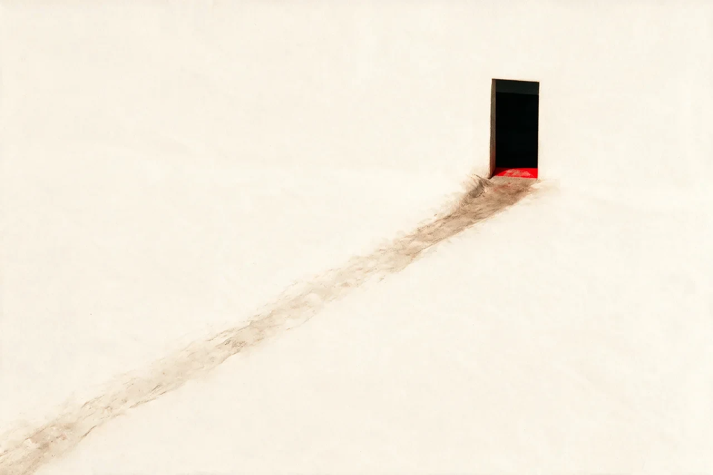

Fig / 002 — Observation artwork 01
Enormous eye · mango too close to see · bleeds off the left edge, headline overlaps

Attention Demand Revenue
Attention should pay.
STIR builds the content, strategy and systems that turn attention into demand — and demand into revenue.
Start a project
For businesses ready to create demand.
Trusted by operators across industries
Consumer brands · Restaurants · Logistics · Industrial · Services
Ordinary business,
extraordinary demand.
Evidence is everywhere.
01 — Demand
01 / Demand
Most businesses don’t need more content.
They need something worth talking about.
The interesting part is usually already there — in the product, the people, the history, the neighborhood or the way the business actually operates. Our job is to find it, build around it and turn the attention it earns into demand.
Proof / 001
Labay
Market.
10M+
Organic views
We didn’t invent Labay’s story. We built the system that helped more people see it.
EV / 001 — Culture
Vertical video 9:16 · in-store culture, real footage
EV / 002 — Content
Photography 4:3 · film frame or still from the series
EV / 003 — Commerce
Social artifact 4:5 · post, comment thread or storefront
EV / 004 — Distribution
Campaign imagery 16:9 · breaks the grid, bleeds right
02 / Method
One operating system, three movements. Find the thing worth knowing, build it into something people recognize, then put the whole system into motion.
- Positioning
- Cultural insight
- Opportunity
- Narrative
- Audience
- Brand systems
- Digital experiences
- Content worlds
- Campaigns
- Commerce
- Content
- Distribution
- Launches
- Growth
- Creative operations
03 / Observations
We have opinions.
Fig / 003 — Observation artwork 02
Inheritance / succession concept · slides under the text, bleeds off the right edge
Your turn.
What are
we not
seeing yet?
There’s probably something inside your business people would care about. Let’s find it.
Tell us about the business